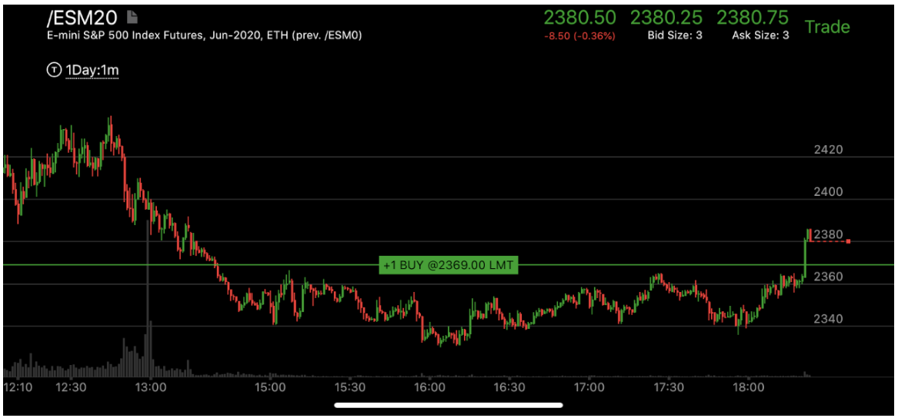
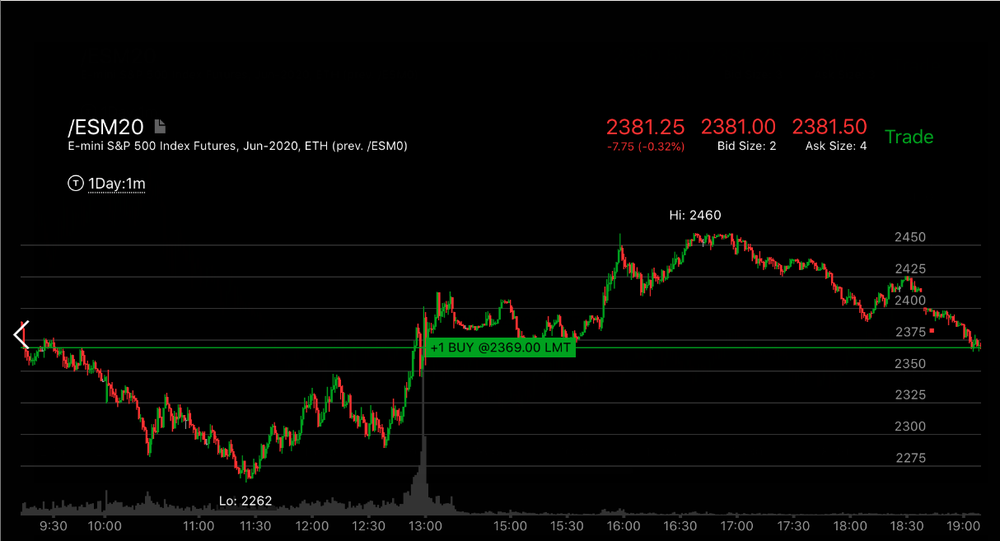

走势启动时，曲折前进后，全部拉回
- 这个走势在走势的启动时常常出现。它也可以在更加大的时间段上出现。可以用5分钟的走势来看更大的时间段。

图示：16：00创新低后，反弹，破坏了跨越走势。说明它可能反转了。
17：10.它开始上涨，形成了三段上涨走势，17：30用一个两段下跌，全部拉回还低于启动点。形成了向下的
加速走势。这样就会开始真的上涨走势了。

图示：11：30和10：30形成了上涨的相对弱势。10：30立刻反弹，
而11：30则在底部停止了几分钟。大盘开始反弹后，12：10创走势新高，然后大幅拉回，12：30拉回点
很低，形成了向下加速。然后才开始正式上涨。